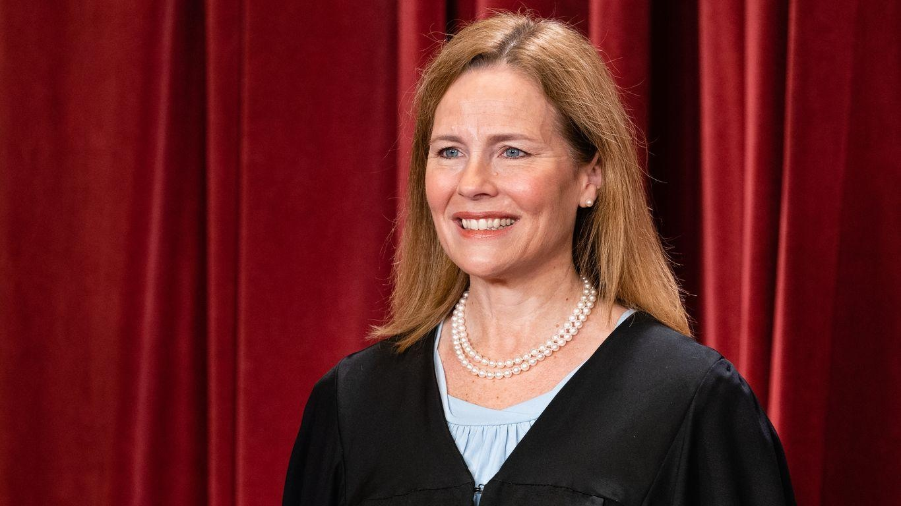

Justice Amy Coney Barrett supports Supreme Court ethics codeJustice Amy Coney Barrett: Supreme Court ethics code is "a good idea" Justice Amy Coney Barrett spoke in favor of a U.S. Supreme Court ethics code during a University of Minnesota Law School event on Monday, per multiple reports. Why it matters: The Supreme Court is the only court in the federal judiciary that doesn't have an official ethics code and there have been growing calls for it to adopt one following revelations of lavish gifts and business activities of some of the justices. What she's saying: "It would be a good idea for us to do it," Barrett said during a conversation with Robert Stein, a longtime law professor and the former chief operating officer of the American Bar Association, at the Minneapolis event, according to the New York Times. - "Particularly so that we can communicate to the public exactly what it is that we are doing in a clearer way," added the conservative justice, whose talk was briefly interrupted by demonstrators protesting the highest U.S. court's decision to overturn Roe v. Wade and end federal protections on abortion. - Barrett noted the justices broadly back ethical guidelines like those followed by lower courts, NBC News reports. - "There is no lack of consensus among the justices," she said. "There's unanimity among all nine justices that we should and do hold ourselves to the highest ethical standards possible." Of note: Justice Elena Kagan has voiced her support for an ethics code and Justice Brett Kavanaugh has said he's "hopeful that there will be some concrete steps taken soon" in the matter. The big picture: The Senate held a hearing into the Supreme Court's ethical standards in April as Democrats pushed for an investigation into justices' activities following reports of lavish gifts and business activities concerning Justices Clarence Thomas and Neil Gorsuch. Go deeper: Roberts says he's "committed" to highest standards for Supreme Court |
 |